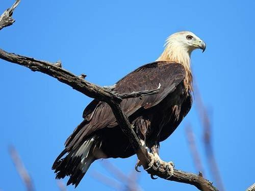
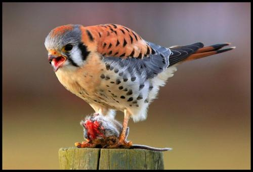
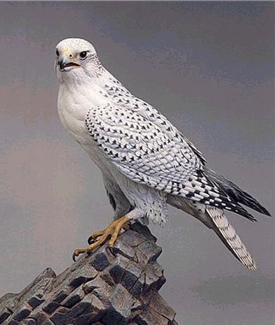
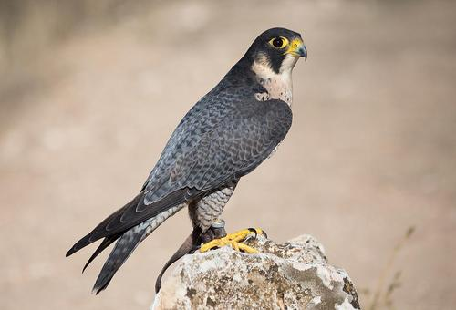
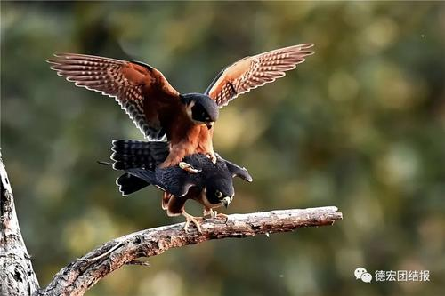
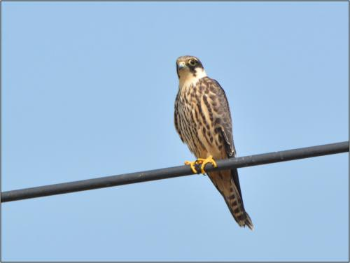
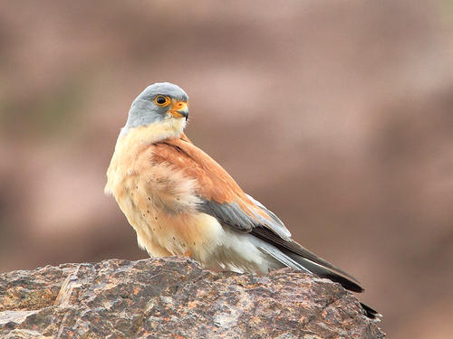

Falcon is a national key protected bird. Falcons are carnivorous, at the top of the bird food chain. Falconiformes include all Raptors except owls, which are diurnal birds of prey. Falconiformes are mostly solitary and have strong ability to fly. They are also one of the animals with the best eyesight.
Unlike other birds in Falconiformes, females tend to be larger than males. There are 4-5 families of falciformes, 2-3 families in China. All Falconiformes in China are national key protected wild animals; Falconiformes are at the top of the food chain in birds, and have important ecological significance. Many Falconiformes are also considered to be brave and resolute, so the national birds of many countries are Falconiformes
Common Kestrel
Any of several small birds of prey of the genus falcon. It is famous for its flying habit when hunting. It feeds on large insects, birds and small mammals. It is rare in eagles that there is a difference in the color pattern between the sexes; the males are more colorful. The Falcon is about 30 cm (12 inches) long; its lower body is white or light yellow, its upper body is reddish brown and slate gray, and its head has color spots.
Falco rusticolus
Its scientific name is Falco rusticolus, and its English name is gyrfalcon, Because of its large size, it is also known as "giant Falcon". Its body length is 56-61 cm and its weight is 1310-2100 G. There are dark, white and gray feathers, and Icelandic National birds.
Peregrine
Medium sized Raptor. The total length is about 40-48 cm. The Dark Slate on the head and back neck is blue gray to black, some with brown; the back and shoulder are blue gray, with dark brown feather stripes and transverse spots; the coverings on the waist and tail are also blue gray, but slightly light, with narrow dark brown transverse spots; the tail is dark blue gray, with dark brown transverse spots and pale tips; the coverings on the wings are light blue gray, with dark brown feather stripes and transverse spots
Oriental Hobby
Brown and black Falcon with small body (25 cm) and long wings. The head and upper body are dark gray with light blue, the lower body is chestnut, and the chin skin is yellow. The thorax of sub adult birds is brown with black longitudinal lines.
European Hobby
Falcon is a common name for several species of raptor, mainly f. subbuteo. The size and physical strength of the Falcon are between the gray backed Falcon and the peregrine falcon. F subbuteo is about 33 cm (13 inches) long. The upper body is dark blue brown, the lower body is white, with dark stripes. The legs are light red.
Lesser Kestrel
Small (30 cm) reddish brown falcon. The male has a gray head, a reddish brown upper body without stripes, and a blue gray waist and tail. The lower body is light brown, and the chin and buttocks are white. Chest with sparse black spots. There is a black transverse band at the proximal end of the tail, and the end is white. The body of the female is reddish brown with transverse spot and lower body. The male and female are similar to kestrel, but they are smaller and slender. The male is more colorful and less black spots.
